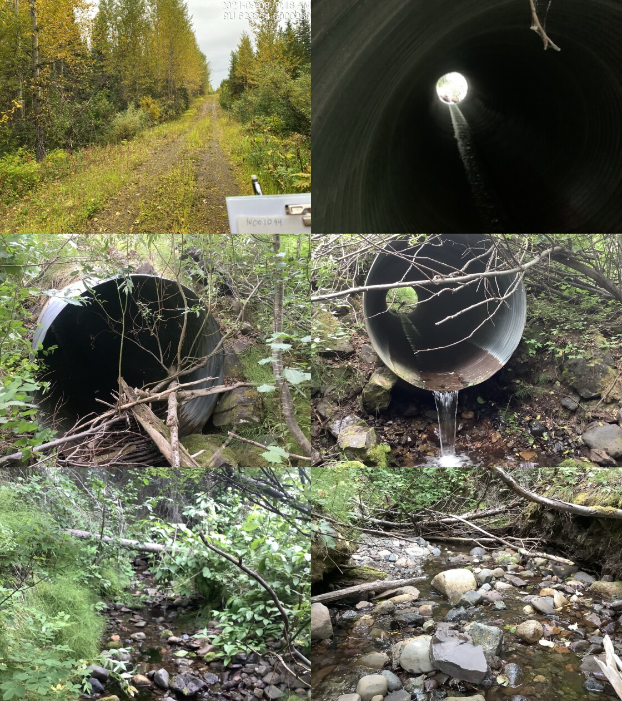

Tributary to Lamprey Creek - 198064 - Appendix
Site Location
PSCIS crossing 198064 is located on Tributary to Lamprey Creek. This site was located on a spur road, approximately 150m upstream from the confluence with the Lamprey Creek. This crossing is the responsibility of Canfor Corporation.
Background
At crossing 198064, Tributary to Lamprey Creek is a second order stream with a watershed area upstream of the crossing of approximately 4.8km2. The elevation of the watershed ranges from a maximum of 1221m to 763m near the crossing (Table 5.81). Upstream of crossing 198064, dolly varden have previously been recorded (MoE 2020b; Norris [2018] 2022).
fpr::fpr_table_wshd_sum(site_id = my_site) %>%
fpr::fpr_kable(caption_text = paste0('Summary of derived upstream watershed statistics for PSCIS crossing ', my_site, '.'),
footnote_text = 'Elev P60 = Elevation at which 60% of the watershed area is above',
scroll = F)| Site | Area Km | Elev Site | Elev Min | Elev Max | Elev Median | Elev P60 | Aspect |
|---|---|---|---|---|---|---|---|
| 198064 | 4.8 | 740 | 763 | 1221 | 1061 | 967 | WSW |
| * Elev P60 = Elevation at which 60% of the watershed area is above |
Compared to other streams within the Morice watershed, Lamprey Creek is a lower elevation stream that experiences relatively low summer flows. Low flows restrict the availability of areas suitable for steelhead rearing. Significant sediment depositions into the Lamprey watershed have been caused by poor logging and road building practises. Other species that have been previously recorded in Lamprey Creek include lake chub, longnose sucker, longnose dace, and prickly sculpin (G. Tamblyn and Croft 2003). In 2002, large numbers of pacific lamprey were spotted spawning in Lamprey Creek during the months of June and July (Bustard and Schell 2002).
Although there are six modelled crossings located upstream of PSCIS crossing 198064 none are on portions of stream modelled as accessible (<20%). PSCIS crossing 198064 was ranked as a moderate priority for follow up by the Society for Ecosystem Restoration in Northern BC due to field notes passed on from Lars Reese Hanson (WLRS - Ecosystems Biologist). A summary of habitat modelling outputs is presented in Table 5.82. A map of the watershed is provided in map attachment 093L.103.
| Habitat | Potential | Remediation Gain | Remediation Gain (%) |
|---|---|---|---|
| ST Network (km) | 5.0 | 3.6 | 72 |
| ST Lake Reservoir (ha) | 0.0 | 0.0 | – |
| ST Wetland (ha) | 0.0 | 0.0 | – |
| ST Slopeclass03 Waterbodies (km) | 0.0 | 0.0 | – |
| ST Slopeclass03 (km) | 0.7 | 0.7 | 100 |
| ST Slopeclass05 (km) | 0.0 | 0.0 | – |
| ST Slopeclass08 (km) | 2.4 | 2.1 | 88 |
| ST Spawning (km) | 0.0 | 0.0 | – |
| ST Rearing (km) | 0.8 | 0.8 | 100 |
| CH Spawning (km) | 0.0 | 0.0 | – |
| CH Rearing (km) | 0.0 | 0.0 | – |
| CO Spawning (km) | 0.0 | 0.0 | – |
| CO Rearing (km) | 0.0 | 0.0 | – |
| CO Rearing (ha) | 0.0 | 0.0 | – |
| SK Spawning (km) | 0.0 | 0.0 | – |
| SK Rearing (km) | 0.0 | 0.0 | – |
| SK Rearing (ha) | 0.0 | 0.0 | – |
| All Spawning (km) | 0.0 | 0.0 | – |
| All Rearing (km) | 0.8 | 0.8 | 100 |
| All Spawning Rearing (km) | 0.8 | 0.8 | 100 |
| * Model data is preliminary and subject to adjustments. |
Stream Characteristics at Crossing
At the time of the survey, PSCIS crossing 198064 was un-embedded, non-backwatered and ranked as a barrier to upstream fish passage according to the provincial protocol (MoE 2011b) (Table 5.83). Fish up to 150mm long were spotted near the crossing. Water temperature was 9\(^\circ\)C, pH was 8.2 and conductivity was 357uS/cm. The stream had comparatively good flow for smaller tributaries the greater Lamprey Creek watershed and review of Phase 1 assessment information indicated that the majority of Lamprey Creek tributaries assessed for fish passage during the same time period this site was assessed were dry.
| Location and Stream Data |
|
Crossing Characteristics | – |
|---|---|---|---|
| Date | 2021-09-08 | Crossing Sub Type | Round Culvert |
| PSCIS ID | 198064 | Diameter (m) | 1.6 |
| External ID | – | Length (m) | 14 |
| Crew | KP AI TP VJ | Embedded | No |
| UTM Zone | 9 | Depth Embedded (m) | – |
| Easting | 623369 | Resemble Channel | No |
| Northing | 6000283 | Backwatered | No |
| Stream | Tributary to Lamprey Creek | Percent Backwatered | – |
| Road | Spur | Fill Depth (m) | 1 |
| Road Tenure | Canfor R05233 | Outlet Drop (m) | 0.54 |
| Channel Width (m) | 2.56 | Outlet Pool Depth (m) | 0.6 |
| Stream Slope (%) | 4.5 | Inlet Drop | No |
| Beaver Activity | No | Slope (%) | 5 |
| Habitat Value | Medium | Valley Fill | – |
| Final score | 36 | Barrier Result | Barrier |
| Fix type | Replace with New Open Bottom Structure | Fix Span / Diameter | 10 |
| Photos: From top left clockwise: Road/Site Card, Barrel, Outlet, Downstream, Upstream, Inlet. | |||
| Comments: Habitat confirmation conducted. Fish observed (150mm). 9:25 |
Stream Characteristics Downstream
The stream was surveyed downstream from crossing 198064 for 150m (Figures 5.103 - 5.104). The dominant substrate was cobbles with gravels sub-dominant.The average channel width was 2.4m, the average wetted width was 1.4m, and the average gradient was 4.5%.Total cover amount was rated as moderate with small woody debris dominant. Cover was also present as large woody debris, undercut banks, and overhanging vegetation. Abundant undercut banks were present, but few deep pools. Water flowed beneath the substrate approximately 5m from the confluence with Lamprey creek. The habitat was rated as medium value for salmonid rearing and spawning.
Stream Characteristics Upstream
The stream was surveyed upstream from crossing 198064 for 500m (Figures 5.105 - 5.108). The average channel width was 2.8m, the average wetted width was 1.9m, and the average gradient was 4.2%.The dominant substrate was gravels with cobbles sub-dominant.Total cover amount was rated as moderate with undercut banks dominant. Cover was also present as small woody debris, large woody debris, and overhanging vegetation. There were abundant patches of gravel that would be suitable for coho spawning at higher flows. Abundant undercut banks were present that provided cover for fish, but there were very few deep pools. The habitat was rated as medium value, containing suitable spawning habitat and having moderate rearing potential.
Structure Remediation and Cost Estimate
Should restoration/maintenance activities proceed, replacement of PSCIS crossing 198064 with a bridge (10m span) is recommended. The cost of the work is estimated at $200,000 for a cost benefit of 9 linear m/$1000 and 25.2 m2/$1000.
Conclusion
There was 1.8km of habitat modelled upstream of crossing 198064 with areas surveyed rated as medium value for salmonid rearing and spawning. 198064 was tentatively ranked as a moderate priority for proceeding to design for replacement. Although a smaller system, assessment data indicates that this stream had comparatively good flow for a smaller tributary in the greater Lamprey Creek watershed. Electrofishing upstream and downstream of the culvert could be considered in order to determine all species present and associated densities. PIT tagging of fish captured upstream and downstream could also be considered for building an understanding of how the culvert may impact local fish populations as well as provide baseline monitoring data should replacement of the crossing occur.
tab_hab_summary %>%
filter(Site == my_site) %>%
# select(-Site) %>%
fpr::fpr_kable(caption_text = paste0('Summary of habitat details for PSCIS crossing ', my_site, '.'),
scroll = F) | Site | Location | Length Surveyed (m) | Channel Width (m) | Wetted Width (m) | Pool Depth (m) | Gradient (%) | Total Cover | Habitat Value |
|---|---|---|---|---|---|---|---|---|
| 198064 | Downstream | 150 | 2.4 | 1.4 | 0.2 | 4.5 | moderate | medium |
| 198064 | Upstream | 500 | 2.8 | 1.9 | – | 4.2 | moderate | medium |
my_photo1 = fpr::fpr_photo_pull_by_str(str_to_pull = '_d1_')
my_caption1 = paste0('Typical habitat downstream of PSCIS crossing ', my_site, '.')Figure 5.103: Typical habitat downstream of PSCIS crossing 198064.
my_photo2 = fpr::fpr_photo_pull_by_str(str_to_pull = '_d2_')
my_caption2 = paste0('Typical habitat downstream of PSCIS crossing ', my_site, '.')Figure 5.104: Typical habitat downstream of PSCIS crossing 198064.
my_caption <- paste0('Left: ', my_caption1, ' Right: ', my_caption2)
knitr::include_graphics(my_photo1)
knitr::include_graphics("fig/pixel.png")
knitr::include_graphics(my_photo2)my_photo1 = fpr::fpr_photo_pull_by_str(str_to_pull = '_u1_')
my_caption1 = paste0('Typical habitat upstream of PSCIS crossing ', my_site, '.')Figure 5.105: Typical habitat upstream of PSCIS crossing 198064.
my_photo2 = fpr::fpr_photo_pull_by_str(str_to_pull = '_u2_')
my_caption2 = paste0('Typical habitat upstream of PSCIS crossing ', my_site, '.')
Figure 5.106: Typical habitat upstream of PSCIS crossing 198064.
my_caption <- paste0('Left: ', my_caption1, ' Right: ', my_caption2)
knitr::include_graphics(my_photo1)
knitr::include_graphics("fig/pixel.png")
knitr::include_graphics(my_photo2)my_photo1 = fpr::fpr_photo_pull_by_str(str_to_pull = '_u3_')
my_caption1 = paste0('Typical habitat upstream of PSCIS crossing ', my_site, '.')Figure 5.107: Typical habitat upstream of PSCIS crossing 198064.
my_photo2 = fpr::fpr_photo_pull_by_str(str_to_pull = '_u4_')
my_caption2 = paste0('Typical habitat upstream of PSCIS crossing ', my_site, '.')
Figure 5.108: Typical habitat upstream of PSCIS crossing 198064.
my_caption <- paste0('Left: ', my_caption1, ' Right: ', my_caption2)
knitr::include_graphics(my_photo1)
knitr::include_graphics("fig/pixel.png")
knitr::include_graphics(my_photo2)